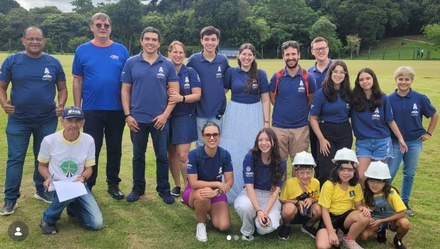
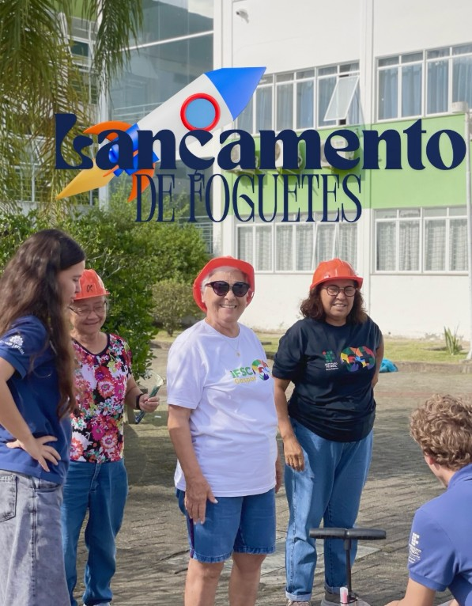

Física
Força, movimento e gravidade.
Projeto do IFSC Câmpus Gaspar.
O GFIG é o Grupo de Foguetes do IFSC Câmpus Gaspar, criado em 2019. O grupo reúne estudantes e professores em atividades de pesquisa, construção e lançamento de foguetes.
Os participantes estudam conceitos de Física, Química, Matemática e Informática durante o desenvolvimento dos projetos.
Força, movimento e gravidade.
Estudo dos materiais usados nos foguetes.
Organização de dados e divulgação do projeto.
Competição latino-americana de foguetes, com lançamentos de 500 m a 1 km de altitude.
Festival de foguetemodelismo onde os modelos do grupo foram premiados.
Oficinas de foguetes de ar comprimido para pessoas da terceira idade.

